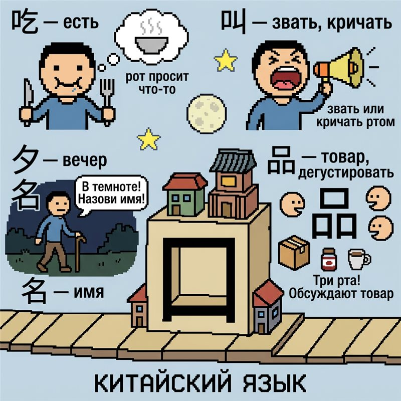

БИП-БУП. Я — РОБ-ОТ-3000, лаборант научного модуля. Датчики подключены. Начинаю доклад об иероглифе 口.
📁 Архив сканов

образец 吃 (chī) · клик — увеличить
> АНАЛИЗ ОБЪЕКТА «口» ... 100%
> СТАТУС: фундамент китайского языка
> Самостоятельное слово «рот» + ключ (радикал) №30. Входит в состав сотен других иероглифов. Частотность: очень высокая.
> Нажимайте на образцы справа для сканирования порядка черт
🧪 Образцы из базы данных (нажми на карточку)
吃
chī
есть
▶ скан черт
叫
jiào
звать, кричать
▶ скан черт
名
míng
имя
▶ скан черт
品
pǐn
товар, дегустировать
▶ скан черт · след. урок!
回
huí
возвращаться
▶ скан черт
出口
chūkǒu
выход («наружу через рот»)
🔊 озвучить
一口人
yīkǒurén
«один член семьи»
🔊 озвучить
🔬 Сканер черт
Выбери образец слева
⚖️ Не перепутай: 口 и 囗
口
Ключ №30 «рот»
стоит сбоку от другого элемента. Пример: 吃
囗
Ключ №31 «ограда» (wéi)
окружает компоненты рамкой. Пример: 回
Если звук не воспроизвёлся — в системе не установлен китайский голос (zh-CN). Добавьте его в настройках ОС.
Урок 1 · 口 (kǒu) · Часть 4 из 5 — Справка и примеры
 РОБ-ОТ-3000
РОБ-ОТ-3000